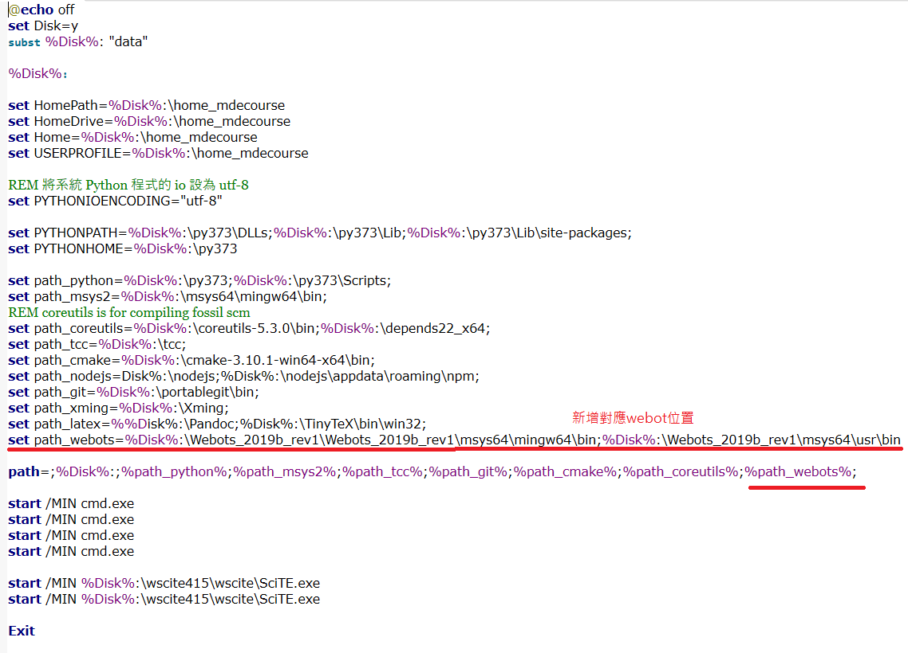

繪圖認證範例 <<
Previous Next >> 零組件繪製
w8
webot 可攜版安裝並啟用

必須將對應的啟動修改加入webot的啟動條件
在Y:新增start_webots.bat, 內容為:
start Y:\Webots_2019b_rev1\msys64\mingw64\bin\webots.exe
當隨身程式系統納入上述兩個條件並啟動後, 可以直接在命令列輸入 start_webots.bat 啟動.
新增blog
對blog進行資料更新改版使網頁上的blog能夠進行瀏覽
1.首先透過Y: launchLeo啟動開啟leo編輯器進行內容更新
2.開啟對應倉儲下config內的pelican檔案進行編修
3.AUTHOR = '40723147' SITENAME = 'CAD2019_40723147' 更新作者標題
4.blog的對應連結SITEURL = 'https://s40723147.github.io/cad2019/blog'進行設定
5.@edit base.html內容更新最新版版可到老師的倉儲進行複製
6.內容設計

新增ssh key
參考影片:
1.在ipv4下的金鑰設定
繪圖認證範例 <<
Previous Next >> 零組件繪製